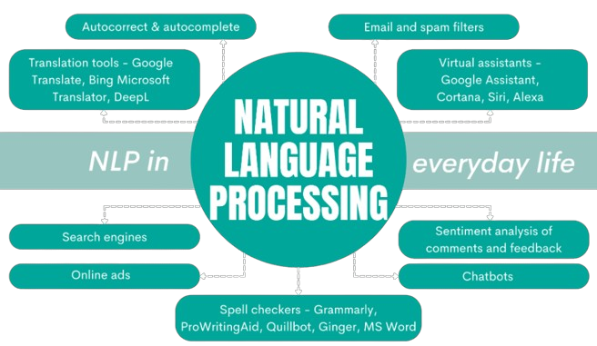
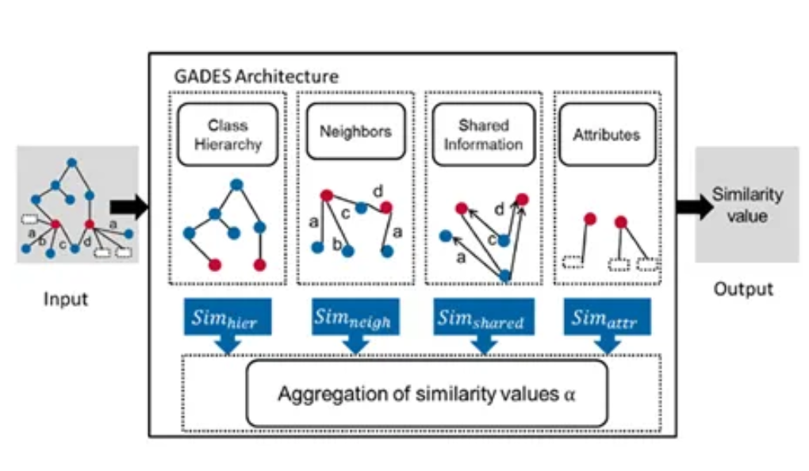

|
Welcome to my personal portfolio! This page showcases my engineering work and projects, documenting the journey and achievements along the way. Here, you will find detailed accounts of each project, highlighting not only my contributions but also those of my talented collaborators. This portfolio will continue to grow as I progress through my career, reflecting the ongoing evolution of my skills and experiences in the engineering field. Explore the diverse range of projects that demonstrate our collective expertise and dedication to innovation. |

|
Image Colorizer for Archaeological Images from CIELAB to RGB color space
Anusha Fatima Alam, Marwan Ismail, Mateusz Kazimierczak, Sebastian Pigeon APS360 - Applied Fundamentals of Deep Learning, Winter 2024 Final Report | YouTube Video | Code |

|
Multiprobe Sensor for improving Soil Testing of Patchouli Plant in Indonesia
Anusha Fatima Alam, Harry Nguyen, Jason Yang, Kate Dong, Meredith Gladish, Marcus Hong ESC204 - Praxis III, Winter 2024 Visual Abstract (for Preliminary Design) | Visual Abstract (for Final Design) | Presentation |
|
|
Seam Carving
Anusha Fatima Alam ESC190 - Computer Algorithms and Data Structures, Winter 2023 Code: seamcarving.h, seamcarving.c, c_img.c, c_img.h |
|  |
Autocomplete NLP
Anusha Fatima Alam ESC190 - Computer Algorithms and Data Structures, Winter 2023 Code |

|
CIV Bridge Project (Class Competition)
Anusha Fatima Alam, Natasha Xiaoyue Yang, Kelly Chen CIV102 - Structures and Materials, Fall 2022 Design Report | Engineering Drawings | Calculations | Python Source Code |
|  |
Semantic Similarity
Anusha Fatima Alam ESC180 - Introduction to Computer Programming, Fall 2022 Code |

|
Gomoku A.I. Engine
Anusha Fatima Alam ESC180 - Introduction to Computer Programming, Fall 2022 Code |

|
Credit Card Simulator
Anusha Fatima Alam ESC180 - Introduction to Computer Programming, Fall 2022 Python Code |
{kind=link}
{kind=link}